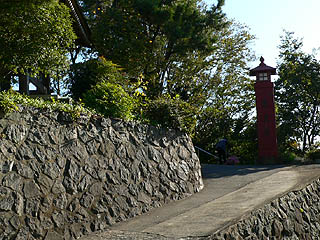
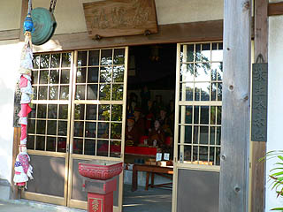
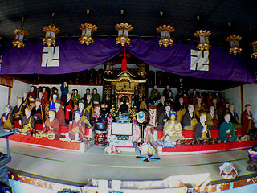
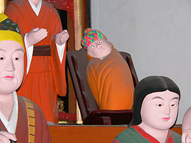
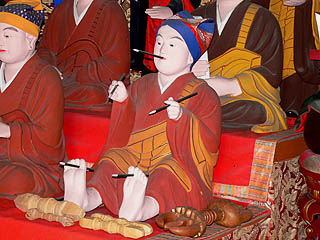
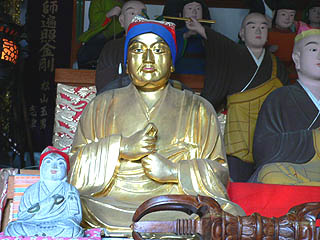
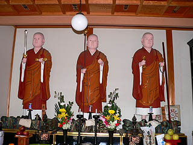

東光寺/愛知県半田市
愛知県半田市の海も程近い住宅地の一画に東光寺という寺がある。
知多四国の番外霊場ともなっている寺で、入口の坂にある赤い高灯籠が目印だ。

周囲より小高い、こじんまりした境内には本堂の他に幾つかのお堂がある。
明治36年に創建されたというこの寺はいかにも近所の人達がふらりと参拝に来るような感じの雰囲気にあふれている。
が。
そんな各駅停車の旅チックなほんわかムードも弘法堂に一歩入ると瞬時に吹っ飛ぶ。

そこには弘法大師の木像がずらずらずら〜っと並んでいるのだ。
我が国仏教界の偉人が数十体も居並ぶその迫力といっら、そりゃもう、大変。

見事に並んだ弘法大師。まるで大師サマそっくりさん大会のようだ。
何でこんなにたくさんの弘法大師が・・・まさか三十三観音のように弘法大師が様々な姿で現れたのか・・・
と思ったら、大師サマの誕生から入定（教義的には死んだんじゃなくて今でも高野山で生きている事になっている、らしい）までの62年間の姿を1年おきに捉えた年弘法というものだそうだ。
年弘法の開眼が明治43年というからほぼこの寺の歴史そのものといっていいだろう。
あ〜、そういえば上の段の方はコドモだし、一番右上には赤ちゃんだわ。
赤ちゃん弘法大師ですな。
つまり1年おきの姿を木像にしたためた、立体空海アルバムとでもいうんでしょうか。
コレを見て弘法大師の生涯と偉業に思いを馳せるがいいでしょう！という趣向のようだ。

右から1年おきに成長している弘法大師の姿を見ているとまるで近所のコドモが大きくなっていくかのような感動を憶える。
「あっら〜、しばらく見ないうちに大きくなっちゃって〜」的なコメントが思わず出そうになる。
という訳で弘法大師の生涯を改めて勉強しなおし。子供向け絵本「空海さま」を読んでみました。
・・・面白い！面白すぎる空海伝説！
その一生は山あり谷あり、ついでにサイキックパワー全開のなんでもありありの大冒険活劇だった。単なる洋行帰りのインテリ僧侶という程度の認識だったが、どっちかというと西遊記もビックリの八面六臂の大活躍！弘法大師が現在まで人気がある理由がよ〜く判りました。スーパーヒーローKOOOOOKAI！なんだね。
真魚（まな）と名乗っていた少年時代、とにかく抜群に勉強が出来て秀才だったそうな。赤い帽子を被った像は赤ちゃん弘法の隣の隣にあるから3才なのだろう、すでに目を真っ赤にして本を読んでいる。
合掌し、岩の上に立っているのは7才の頃、故郷の讃岐国捨身岳での身投げ事件のワンシーン。仏法に生涯を捧げる事を誓願し、それが聞き届けられるのならどうぞこの身を救いたまえ、てな事で三度も身投げをしたそうな。もちろんここで死んでしまっては真言宗も高野山もない訳で、きっちり天人に救われます。
乗馬マシーンに乗る弘法大師、「前へならえ」する弘法大師。足元にあるのは少年時代に好んで作ったといわれる仏様の泥人形だろうか。
さて、そんな神童真魚少年も奈良に上京し、いよいよ出家し、僧侶として活躍する。
その後、金星が口の中に入って来ちゃったり、天狗を法力でやっつけたり、お釈迦様を目撃したりと些細な事件が色々あったのだが、何といってもその輝かしきKOOOOOKAIキャリアの第一頁は遣唐使としての長安留学だろう。
長安到着時にはすでに弘法大師の書の腕前は長安の人々の耳に入っていた。
そこで当時の唐の皇帝、徳宗が壁に書を書かせると大師さん、おもむろに両手足に筆を持ち、ついでに口にも筆をくわえて五行の書を大書したという。このエピソードが弘法伝説で一番面白かった。いっぺんに5本の筆で書く必然性が全然ないのに敢えて5本で書くところが面白い。
これがその時の図。

話だけでも荒唐無稽なのに、こうして彫刻で真面目に再現するとさらに面白い。
ちなみに「空海さま」にはこのポーズのままジャンプして一瞬で書いたとある・・・弘法大師ファンのちびっこ達はマネしちゃだめだよ。
まあ、そんなこんなで密教の奥義をマスター後、帰朝し日本に密教を広め、真言宗を興し高野山を開き、その他東寺建設など様々なビッグプロジェクトを手掛け、橋を架け、池を造り、その合間に杖を刺して温泉を掘りあてたり、雨乞いをしたり、最澄に結縁灌頂を授けたり、そして決別したり、で、その間に修業をして人助けをして弟子を育てたり、と、62才で入定するまで密教の布教に一生を捧げた大師さん、最後は金ぴかになっちゃってました。
やはり若い頃に呑み込んだ金星が効いたんでしょうね・・・

ところで62才で入定された弘法さん、ということは62体あるはずなのだが、どう数えても四十数体しかない。
私の信心が足りないから残りの十数体は見えないのだろうか・・・
かつて年弘法が納まっていたお堂は昭和20年の地震で倒壊している。その際に破損あるいは紛失してしまったのかもしれない。現在の弘法堂は昭和55年に再建されたものである。その際に年弘法も修復されたのだろう、どの年令の弘法さんも塗り直されてお肌リフレッシュ。アンチエイジングですな。
隣の大師堂には三体の弘法大師像。
左から厄除大師、日限大師、衆生救度大師の御三方。
これもこの寺が出来てすぐにつくられたものだがびっちり塗り替えられていてお肌ツヤツヤ。
先程の年弘法もそうだったが岡川寺のジャンボ大師を思わせるマンガチックな大師サマである。

そして本堂脇の部屋を見上げると・・・
棚には大師像がびっしりと。
小さな寺なのにこんなに弘法大師がいるとは驚きである。愛知県の弘法大師信仰の盛んなところを見せつけられた気分である。
弘法大師ラブにあふれまくった寺だった。
浄土宗系のお寺なんですけどね。
2005.11.
珍寺大道場 HOME